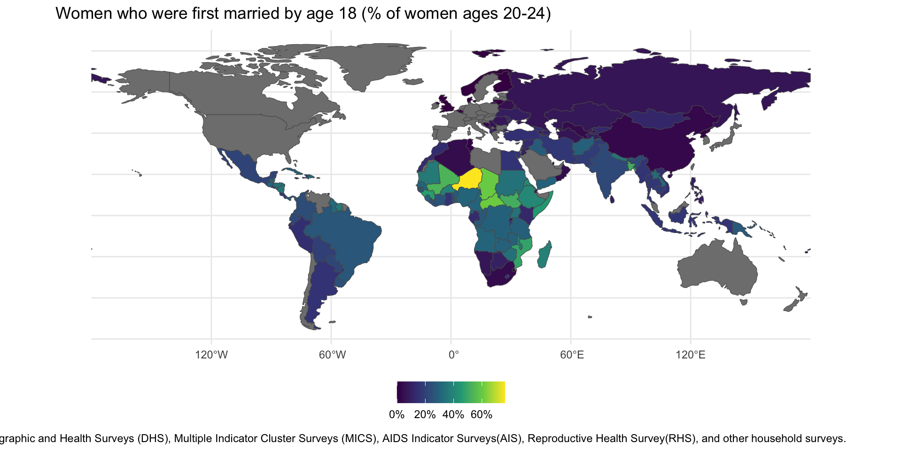
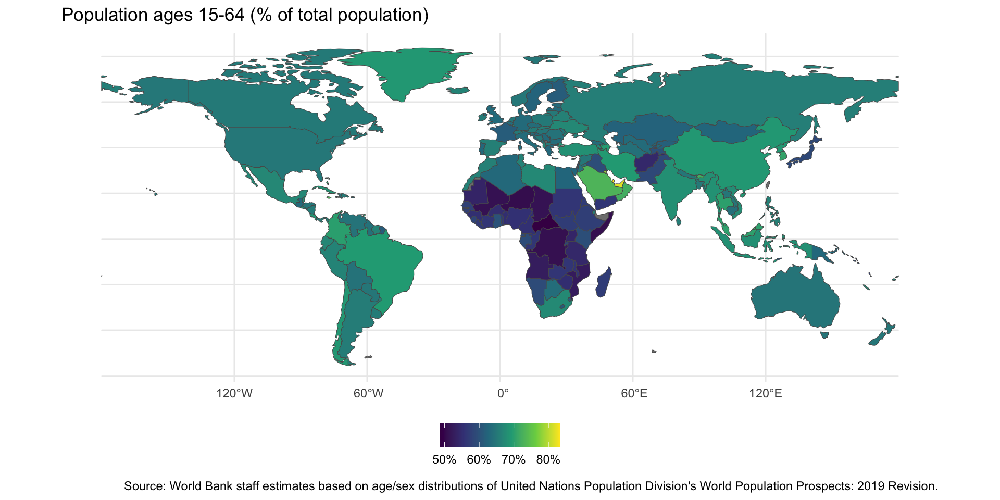

Lecture 4.1
Women’s Empowerment
Emmanuel Teitelbaum
Overview
- Discrimination and violence against women
- Labor force participation rates
- Women’s representation
Discrimination and VAW
Relevance
- Instrumental reasons
- Female labor force participation
- women’s representation
- Ethical reasons
- What is development?
- Growth? Freedom? Participation?
- Is it development if half the population is left out?
- What is development?
Sex ratios map

Causes of Missing Women
- Female deprivation—girls malnourished (Sen)
- Tied to cultural factors (caste, dowry, etc)
- Poverty
- Lower value placed on girls could lead to deprivation
- However, poor families depend more on girls for labor
- Environmental factors
- Macro-factors, e.g. climate change, pollution
- Gestation environment, e.g. Hepatitis B
- Female infanticide, sex-selective abortions
Laws and Regulations

Sexuality and Reproductive Freedom
Domestic Violence

Role of Social Institutions
- Social institutions—formal and informal constraints that influence social relations
- Important role for gender because they determine what is deemed acceptable or unacceptable in a society
- OECD SIGI
- Index of social discrimination
- Scores on four dimensions combined to create overall score and ranking
- Index of social discrimination
SIGI Map

Source: OECD SIGI
Five Minute Challenge
- Go to SIGI Policy Simulator
- Choose a region
- Choose a country
- How does your country rank relative to others in the region?
- Select “View table”
- Compare to best country in the region
- What changes need to be made for your country to achieve similar score?
Labor Force Participation
What Causes Economic Growth?
Mankiw, Romer & Weil:
\[Y(t) = K(t)^{\alpha}H(t)^{\beta}(A(t)L(t))^{1-\alpha-\beta}\]
where \(Y\) = output, \(t\) = time, \(K\) = capital, \(L\) = labor, \(A\) = labor-augmenting technology (knowledge), and \(H\) = human capital (education and training, e.g. productivity).
Women and Growth
- Women are especially important for \(L\) and \(H\)
- Constitute half of labor force
- Serve as primary caregivers
- Responsible for health and well-being of children
- Mother’s education directly impacts that of girls
- Important questions
- Are women educated?
- Are they able to work?
The Demographic Dividend
The Dependency Ratio
Burden of Older Population

Burden of Younger Population

Global Trend in FLFP

FLFP Map

Development and FLFP
Women and Agriculture

Total Fertility Rates

Women in Politics
Female Political Represenation

Discussion
- Hessani and Fonseca
- Explanations for low representation
- Which is most convincing?
- Consequences
- Do women have different preferences and priorities?
- Do women make different policy choices?
- How do women improve the quality of institutions?
- What are some differences between developing and wealthy nations?
- Women’s empowerment
- Are there spillover effects?